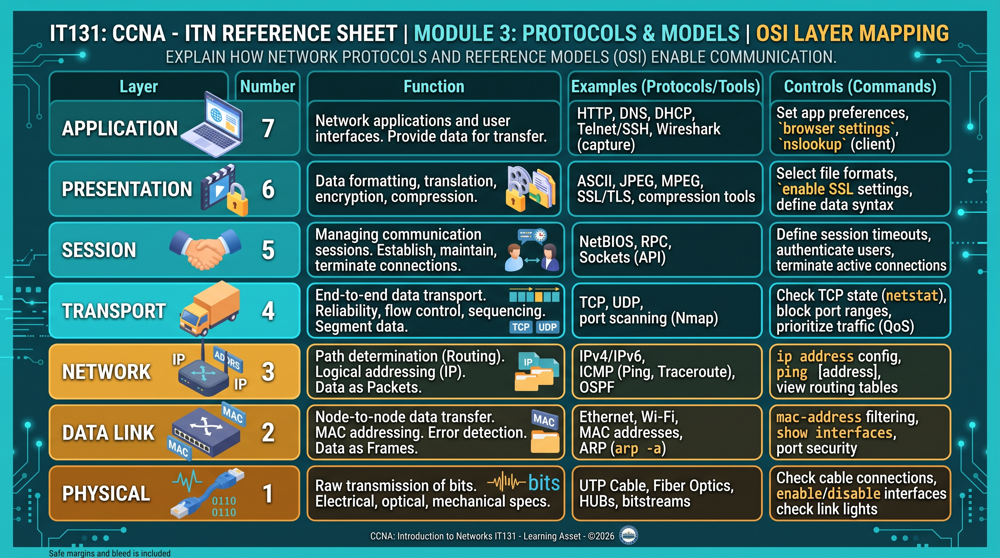

<title>IT131 – Graphics &amp; Diagrams</title>
<meta name="viewport" content="width=device-width, initial-scale=1">
<link rel="preconnect" href="https://fonts.googleapis.com">
<link rel="preconnect" href="https://fonts.gstatic.com" crossorigin>
<link href="https://fonts.googleapis.com/css2?family=Special+Elite&family=IBM+Plex+Sans:wght@400;500;600;700&family=IBM+Plex+Mono:wght@400;500;600;700&display=swap" rel="stylesheet">

<style>
  :root{
    --paper:#EDE8DD; --canvas:#D9D2C3; --ink:#1F2421; --kraft:#B08554; --kraft-dark:#664526;
    --blue:#2F4858; --red:#A23A2E; --ticket:#F3E7E2;
    --blue-soft:rgba(47,72,88,.08); --red-soft:rgba(162,58,46,.08);
    --kraft-soft:rgba(176,133,84,.14); --ink-soft:rgba(31,36,33,.06);
    --shadow:5px 5px 0 rgba(31,36,33,.16);
    --display:'Special Elite','Courier New',monospace;
    --sans:'IBM Plex Sans', system-ui, sans-serif;
    --mono:'IBM Plex Mono', monospace;
  }
  *{box-sizing:border-box;}
  html{scroll-behavior:smooth; font-size:125%;}
  body{
    margin:0; background:var(--canvas); color:var(--ink); font-family:var(--sans);
    line-height:1.55; -webkit-font-smoothing:antialiased;
    background-image:radial-gradient(rgba(31,36,33,.06) 1px, transparent 1px);
    background-size:16px 16px;
  }
  ::selection{ background:var(--kraft-soft); }
  a{ color:var(--blue); }
  .wrap{ max-width:940px; margin:0 auto; padding:0 20px; }
  code{ font-family:var(--mono); background:var(--ink-soft); padding:1px 6px; border-radius:2px; font-size:.9em; }

  header.masthead{ padding:48px 0 30px; }
  .eyebrow{ display:inline-block; font-family:var(--mono); font-size:.86rem; letter-spacing:.12em;
    border:2px solid var(--blue); color:var(--blue); padding:4px 10px; transform:rotate(-2deg); background:var(--paper); }
  h1{ font-family:var(--display); font-weight:400; font-size:clamp(1.9rem,5vw,2.9rem); letter-spacing:.01em;
    margin:16px 0 10px; line-height:1.15; }
  .lede{ max-width:64ch; font-size:1.02rem; line-height:1.6; opacity:.85; margin:0 0 18px; }
  .factrow{ display:flex; flex-wrap:wrap; gap:10px; }
  .fact{ font-family:var(--mono); font-size:.82rem; letter-spacing:.02em; background:var(--paper);
    border:1.5px solid var(--ink); padding:.4em .8em; display:flex; gap:.5em; box-shadow:3px 3px 0 rgba(31,36,33,.14); }
  .fact b{ color:var(--kraft-dark); font-weight:600; text-transform:uppercase; letter-spacing:.06em; font-size:.88rem; }

  nav.index{ position:sticky; top:0; z-index:20; background:color-mix(in srgb, var(--canvas) 92%, transparent);
    backdrop-filter:blur(6px); border-top:2px solid var(--ink); border-bottom:2px solid var(--ink); }
  nav.index .wrap{ display:flex; gap:2px; overflow-x:auto; padding:8px 20px; scrollbar-width:none; }
  nav.index .wrap::-webkit-scrollbar{ display:none; }
  nav.index a{ font-family:var(--mono); font-weight:600; letter-spacing:.03em; font-size:.82rem; text-decoration:none;
    color:var(--ink); opacity:.85; padding:.5em .8em; white-space:nowrap; text-transform:uppercase; border:1px solid transparent; }
  nav.index a:hover{ opacity:1; border-color:var(--ink); background:var(--paper); }
  nav.index a.toc-link{ color:var(--blue); opacity:1; border-right:1.5px solid var(--ink); margin-right:8px; padding-right:16px; }
  nav.index a.toc-link:hover{ background:var(--blue-soft); border-color:var(--ink); }

  section{ padding:44px 0; border-bottom:2px dashed rgba(31,36,33,.3); }
  section:last-of-type{ border-bottom:none; }
  .section-head{ margin-bottom:26px; max-width:70ch; }
  .kicker{ font-family:var(--mono); font-weight:600; font-size:.9rem; letter-spacing:.14em; text-transform:uppercase;
    color:var(--red); margin:0 0 .4em; }
  h2{ font-family:var(--display); font-weight:400; font-size:clamp(1.4rem,2.8vw,1.9rem); margin:0 0 .25em; letter-spacing:.005em; }
  .section-head p{ opacity:.82; margin:.5em 0 0; }

  .cold-open{ background:var(--paper); border:1.5px solid var(--ink); box-shadow:var(--shadow); padding:18px 20px; margin:24px 0; }
  .cold-open .tag{ font-family:var(--mono); font-size:.84rem; letter-spacing:.1em; color:var(--red); margin:0 0 8px; text-transform:uppercase; }
  .cold-open p{ margin:0; font-size:.95rem; line-height:1.6; font-style:italic; }

  /* EXHIBITS */
  .exhibit{ position:relative; margin-top:26px; background:var(--paper); border:1.5px solid var(--ink); box-shadow:var(--shadow); }
  .exhibit:first-of-type{ margin-top:20px; }
  .exhibit-tab{ position:absolute; top:-15px; left:16px; background:var(--kraft); color:var(--ink); font-family:var(--mono);
    font-weight:600; font-size:.82rem; letter-spacing:.06em; padding:4px 9px; border:1.5px solid var(--ink); border-bottom:none; }
  .exhibit-inner{ padding:26px 22px 22px; }
  .exhibit-inner h3{ font-family:var(--display); font-weight:400; font-size:1.3rem; margin:0 0 6px; line-height:1.25; }
  .exhibit-meta{ font-family:var(--mono); font-size:.82rem; color:var(--kraft-dark); margin:0 0 16px; text-transform:uppercase; letter-spacing:.04em; }
  .exhibit-img{ display:block; width:100%; height:auto; border:1.5px solid var(--ink); margin-bottom:14px; background:var(--ticket); }
  .exhibit-caption{ margin:0; font-size:.92rem; line-height:1.55; opacity:.88; }
  .exhibit-caption strong{ color:var(--blue); }

  footer{ padding:30px 0 60px; }
  footer p{ opacity:.65; font-size:.82rem; font-family:var(--mono); letter-spacing:.02em; }

  .back-to-top{ position:fixed; bottom:22px; right:22px; z-index:40; width:50px; height:50px;
    background:var(--paper); border:1.5px solid var(--ink); box-shadow:var(--shadow);
    font-family:var(--display); font-size:1.4rem; color:var(--ink); line-height:1;
    display:flex; align-items:center; justify-content:center; padding:0; cursor:pointer; text-decoration:none;
    opacity:0; visibility:hidden; transform:translateY(10px);
    transition:opacity .25s ease, transform .25s ease, visibility 0s .25s; }
  .back-to-top.show{ opacity:1; visibility:visible; transform:translateY(0); transition:opacity .25s ease, transform .25s ease, visibility 0s; }
  .back-to-top:hover{ background:var(--blue-soft); border-color:var(--blue); color:var(--blue); }
  .back-to-top:focus-visible{ outline:2px solid var(--blue); outline-offset:2px; }

  @media print{
    body{ background:#fff; }
    nav.index{ display:none; }
    .exhibit{ box-shadow:none; }
    .back-to-top{ display:none; }
  }
</style>

<header class="masthead">
  <div class="wrap">
    <p class="eyebrow">IT131 · REFERENCE</p>
    <h1>Graphics &amp; Diagrams</h1>
    <p class="lede">Reference sheets, diagrams, and other visual handouts from lecture — filed here with a title, a caption, and a note on which session each one belongs to. New exhibits get added as the semester goes.</p>
    <div class="factrow">
      <span class="fact"><b>Filed</b> 1 exhibit</span>
    </div>
  </div>
</header>

<nav class="index" aria-label="Section index">
  <div class="wrap">
    <a href="index.html" class="toc-link">↩ Contents</a>
    <a href="#exhibits">Exhibits</a>
  </div>
</nav>

<main class="wrap">

  <section id="exhibits">
    <div class="section-head">
      <p class="kicker">Exhibit Log</p>
      <h2>Filed graphics</h2>
      <p>Numbered in the order they were added, not by session — check each exhibit's caption for where it fits in the term.</p>
    </div>

    <div class="cold-open">
      <p class="tag">Note</p>
      <p>Nothing to add yet beyond the first exhibit — this page is built to grow. Drop a new image in <code>Instructional_Assets/</code> and it gets its own numbered card here, same format every time.</p>
    </div>

    <div class="exhibit">
      <span class="exhibit-tab">EXHIBIT 01</span>
      <div class="exhibit-inner">
        <h3>OSI Layer Mapping Reference Sheet</h3>
        <p class="exhibit-meta">Module 3 — Protocols and Models · Session 2</p>
        
        <p class="exhibit-caption">All seven OSI layers in one table — <strong>function</strong>, <strong>example protocols/tools</strong>, and the <strong>CLI commands</strong> tied to each layer. A standing reference worth pulling up any time a layer number comes up in class, not just during Module 3.</p>
      </div>
    </div>
  </section>

</main>

<footer>
  <div class="wrap">
    <p>IT131 · CCNA: Introduction to Networks · Graphics reference — new exhibits added as they're collected.</p>
  </div>
</footer>

<button id="backToTop" class="back-to-top" aria-label="Back to top" title="Back to top">↑</button>

<script>
  const backToTop = document.getElementById('backToTop');
  function toggleBackToTop(){ backToTop.classList.toggle('show', window.scrollY > 480); }
  window.addEventListener('scroll', toggleBackToTop, {passive:true});
  toggleBackToTop();
  backToTop.addEventListener('click', () => window.scrollTo({top:0, behavior:'smooth'}));
</script>
